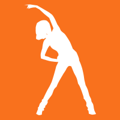
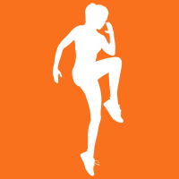

Transformação Essencial
Rumo ao equilíbrio:Cuide de você, mesmo com a rotina cheia!
Descrição Rápida
Você trabalha, treina, cuida da casa e da família... e sempre
acaba se deixando para depois? No desafio Transformação Essencial,
de apenas 30 dias, você vai aprender a melhorar seus hábitos
alimentares com pequenas mudanças, adaptadas ao seu dia a dia.
Mais saúde, energia e leveza, sem sofrimento!
Benefícios do Desafio
Reduza o consumo de doces e ultraprocessados, sem proibições.
Aprenda a organizar refeições simples e saudáveis, mesmo com pouco
tempo. Melhore sua disposição e bem-estar para aguentar a correria
do dia a dia. Transforme pequenos passos em hábitos duradouros,
que realmente funcionam. Tenha uma vida saudável, mesmo que com
pouco tempo!
Como funciona
Um plano simples, passo a passo, pensado para pessoas como você!
Duração: 30 dias. Metas semanais: Pequenas mudanças
para implementar aos poucos, melhorando seu estilo de vida sem
sofrimentos nem sacrifícios. Exemplo: Reduzir o consumo de doces,
incluir mais água ou planejar lanches saudáveis.
Acompanhamento: Orientações exclusivas por um grupo no
WhatsApp. Dicas práticas, receitas e suporte motivacional.
Resultados: Você começa devagar, mas no final estará com
novos hábitos que vão durar uma vida inteira!
Participe agora e comece sua transformação!
Clique no botão abaixo para se inscrever.Investimento
Acesso ao desafio + grupo exclusivo no WhatsApp + materiais
extras (planner, vídeos, etc.). Por apenas R$57,00, com
condições especiais para pacientes de parceiros!! Além disso, só
de fazer parte do desafio você já terá direito a descontos na
consultoria, e concorrerá a um sorteio de uma consultoria
trimestral totalmente gratuita! Pense no desafio como um
investimento em você e na sua saúde. É menos que o valor de uma
pizza por semana e traz benefícios que podem durar uma vida
inteira!
1. Preciso seguir uma dieta específica? Não! O
desafio é sobre mudar hábitos aos poucos, sem dietas radicais.
Você vai aprender a adaptar as metas à sua rotina.
2. Quanto tempo preciso dedicar ao desafio?
Poucos minutos por dia. As mudanças são simples e práticas,
perfeitas para quem tem pouco tempo.
3. E se eu não conseguir seguir 100%?
Tudo bem! O objetivo é o progresso, não a perfeição. Vamos
celebrar cada passo!
4. Para quem é indicado o desafio? Pessoas
adultas que trabalham, cuidam da casa, treinam (ou pretendem
começar) e querem melhorar a alimentação sem sofrimento.
Provas sociais

Mariana – Reduzindo os doces aos poucos
Começou comendo doce todos os dias. Na consultoria, ela
aprendeu a reduzir para dia sim, dia não, e depois para
apenas 2 vezes por semana. Hoje, ela sente que tem mais
energia e menos culpa quando sente vontade de comer doces

Ana – Descobrindo o prazer de uma rotina organizada
Achava impossível planejar refeições. Durante o
acompanhamento, ela adotou estratégias rápidas e práticas,
como deixar frutas e lanches à mão, e comida pronta em casa
para não apelar para o ifood. Agora, ela se sente mais no
controle da alimentação e da saúde
João – Em 8 meses, uma nova pessoa
não tinha tempo de comer comida durante a semana devido à
correria do trabalho + faculdade, mas fazia academia
5x/semana. Com minhas orientações, ele conseguiu encaixar um
tempo para preparar as marmitas da semana, tomava sol
diariamente e começou a dar mais atenção ao sono, tendo
resultados absurdos em pouco tempo (-20kg)